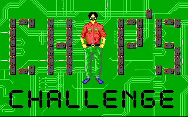
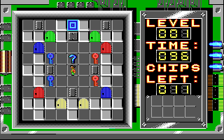

名稱：迷宮動動腦 (Chip's Challenge，英文版) 簡介：Epyx 1989年出品的解謎過關遊戲，1992年移植到Windows 3.1 [待補]。

保護：DOS版為磁片，破解碼： CHIPS.EXE 0B C0 74 25 E8 5C FF 0B C0 74 1E B0 00 0B C0 EB 23 90 -- -- -- -- 或 0B C0 74 25 E8 5C FF 0B C0 74 1E -- -- EB -- 90 90 90 -- -- EB -- INSTALL.EXE E8 AB FD 0B C0 74 0A 90 90 90 -- -- EB -- 檔案：chips31.rar = Win31版 chips31_add.rar = Win31版第二組關卡包